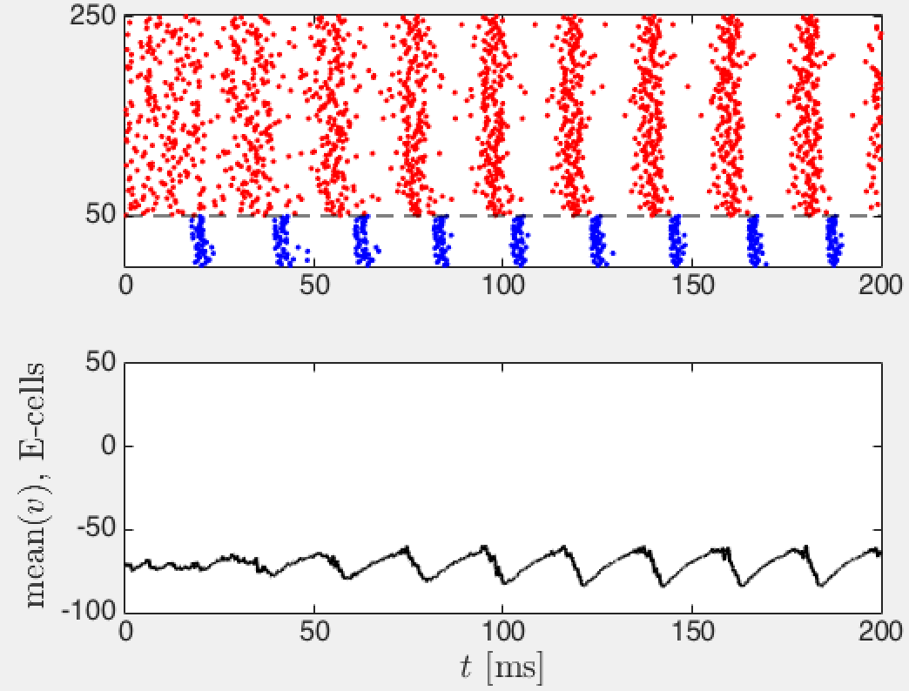

To investigate the process of encoding learned information, by constructing an in silico model of the Pavlovian pathway in the Amygdala
To analyze neruomodulatory implications on the formation of gamma oscillations in the amygdala
To perform slice culture analysis as biological validation of the mechanism underlying gamma oscillations
To examine the role of gamma oscillations in fear conditioning
To elucidate aspects of the molecular mechanisms underlying emotionally aroused memory storage, by re-evaluating the virtual state of a mouse brain under different experimental conditions
Introduction
The amygdala plays an essential role in emotion, motivation, and memory, especially those associated with anxiety and negativity. A prevalent pathway in the amygdala, the fear conditioning pathway, encodes fear memories associated with contextual stimuli. Fear conditioning, a specific type of pavlovian conditioning, is a type of conditioned learning which takes advantage of a subject’s instinctive response to have a given stimulus become increasingly effective in evoking said response. This is done by reinforcement, such that two stimuli are presented in close temporal proximity with an appropriate intensity, and is characterized as a learned response. As amygdala dysfunction has been implicated in a range of psychiatric disorders, including anxiety disorders, addiction, and autism, being able to precisely alter and analyze the underlying neural mechanisms using an in silico model could advance clinical therapies. Previous studies suggest that changes in the frequency of oscillation couplings between gamma oscillations and specific portions of the theta cycle correlate with the states of fear and safety. Specifically, theta-gamma coupling overlap was increased during states of fear, while the coupling was suppressed during perceived safety. There are two primary theories for the underlying mechanism of gamma oscillations: pyramidal-interneuronal network gamma (PING) rhythms and interneuronal network gamma (ING) rhythms. Whilst many neuroscientists model gamma oscillations and many model neural circuitry, existing neural network models do not incorporate both. This study of fear conditioning in the amygdala was designed to unify the implication of gamma oscillations and network circuitry in learning.
So ...
In this study, the Pavlovian pathway in the amygdala was computaionally modeled in Matlab to investigate learning to associate two stimjuli.
Because of the correlation between gamma oscillations and encoding fear states, the underlying mechanism of gamma oscillations in the amygdala was investigated in slice culture, as well as a simplified network of excitatory (E cells) and inhibitory (I cells) neurons.
Table of Contents
The Biological System
Elements of Neural System To Be Modeled
Software
Matlab
Network Architecture
The Pavlovian Pathway
Single Cell Models
Modeling E and I Cells
Modeling Neuro- modulator Effects
Dopamine and Norepinephrine
Network Synchrony
Ɣ Oscillations
Slice Cultures
Ɣ Oscillations in vitro
Matching In Vitro and In Silico
Next Steps
Constructing the LA
The Lateral Amygdala
Constructing the BL
The Basal Amygdala
Characterizing learning
Degree of Freezing
Engineering Design Elements
A Summary
The Checklist
Milestones & Deliverables
Risk Assessment
Mitigation Plans
References
Avoiding Lawsuits
The Biological System
Elements of Neural System To Be Modeled
Introduction
In this study, we will develop an in silico model of the pavlovian fear conditioning pathway in the amygdala to illuminate the mechanism underlying the learned association between a neutral and an aversive input.
The amygdala is named for its almond shape, is a component of the limbic system that is located within the temporal lobe of the brain, and plays an essential role in emotion, motivation, and memory.
According to the encyclopedia Britannica, pavlovian conditioning, also known as classical conditioning, is a type of conditioned learning which takes advantage of a subject’s instinctive response to have a given stimulus become increasingly effective in evoking said response. This is done by reinforcement, such that two stimuli are presented in close temporal proximity and with an appropriate intensity [2].
To design our computational model, we model relevant regional neural structures linked to the pathway: the lateral amygdala (input), the basal amygdala, the prelimbic cortex, and the central amygdala (output). The connectivity of the model will be validated through prior findings, as well as through experimental data from slice cultures. Furthermore, these slice cultures will be used to study the role of network synchrony in learning to associate a memory with fear. Because neural oscillations are thought to play a mechanistic role in synchrony, they will also be analyzed in slice culture, and their effect modeled in silico.
The in-vitro model itself will be validated with references from previous studies. These past data sets can help confirm whether the input/output relation would have triggered the pathway for a fear conditioned response. This allows for greater reliability and precision in evaluating possible inputs. Statistical tests will be employed to determine the significance of the correlation between the biological data and the in silico model.
Regional neural network responses will be compared against pre-existing data. Some such assumptions are that the lateral amygdala displays transient signal responses to conditioned stimuli, whilst the basal amygdala and the prelimbic cortex both display sustained responses to conditioned stimuli [1]. The literature tells us that this sustained feedback from the prelimbic cortex is linked to the freezing behavior evoked in primates in reaction to a threatening stimulus [1]. Previous studies also combined extracellular recordings and optogenetics to study oscillatory correlations with behavioral responses and concluded that the onset of a freezing behavioral expression of fear correlated with sustained 4hz oscillations of prefrontal amygdala circuits [6]. Preconditioning and postconditioning neural responses from relevant regions will be quantified and the significance of their relationship compared. Quantifying connection strengths and neuromodulator effects will come from computational models developed in the past, as often interactions between neural structures and components are qualified from in vivo experiments but unable to be accurately quantified.
To construct the in silico model, Hodgkin-Huxley neuronal models will be used for individual neurons, and the most prominent type of neurons found in each of the relevant neural structures will be developed from them. This will be similar for the modeling of interneurons, of which GABAergic will be one -- as it is the most common interneuron in the basolateral amygdala [1]. The most impactful neuromodulators on the pavlovian fear conditioning pathway in the amygdala are dopamine and norepinephrine [1]. These will be the two neuromodulators modeled, including there effect when binding to dopamine 1 versus dopamine 2 receptors, and norepinephrine beta versus norepinephrine alpha receptors, on said pathway [1]. More details on modeling decisions are presented in other modals.
Significance
Learning the fundamental emotional significance of a stimulus is an essential skill for survival. Not only for determining the behavioral response to a predator -- fight or flight, but also for modulating aspects of memory and cognition. It is known that emotionally arousing events have a higher probability for retainment than do neutral ones. This fact is especially true for negative events. Moreover, the amygdala is the source of many neuropsychiatric disorders that occur in developing youth. Previous studies have implicated amygdala dysfunction in anxiety disorders, addiction, and more complex neuropsychiatric disorders, such as autism. As research on the amygdala advances, it’ll open the way to the development of new treatments for and/or greater understanding of these disorders.
Software
MatLab
MATLAB combines a desktop environment tuned for iterative analysis and design processes with a programming language that expresses matrix and array mathematics directly.
What it will be used for:
Matlab will be the coding software used to construct the in silico model, as it is especially useful at differential mathematics. The parameters determining the output of neurons -- and neural networks -- can be weighted in matrix form. The model will be designed in layers, with each layer being a specific region of the fear conditioning pathway, and the connectivity between layers determined from previous literature. Synchrony of various neural regions will be influenced by the oscillatory effects, which will also be modeled.
Network Architecture
The Pavlovian Pathway
The general connectivity of the system is shown in the Figure above and will be modeled as follows. Although, the quantified connectivity is subject to change based on experimental data.
As the lateral amygdala doesn’t receive feedback from the basal amygdala nor the prelimbic cortex, it will be the “input” of the in silico model. Biologically the lateral amygdala is known to project to the basal amygdala, this will be mimicked in the model, accordingly. The basal amygdala projects to the prelimbic cortex. Pre-existing literature asserts that there is a dense bidirectional connectivity between the basal amygdala and the medial prefrontal cortex. As such, prelimbic cortex neurons will project to the basal amygdala as well. The basal amygdala also projects to the central amygdala. The central amygdala will be modeled as the “output” of the system. It is a known and key output region of the primate amygdala [1]. This output of the central amygdala is the behavioral response evoked by the stimulus. As mentioned above, the primary behavioral response being evaluated by this study is freezing, with the hope that the in silico model may be expanded to account for the fleeing behavioral response, as well.
Fig. Network Architecture of In Silico Model
Single Cell Models
For Analyzing Neuromodulation of Gamma Oscillations
The Wang Buszaki Model
Modeling Neuromodulators
Biological Basis
Dopamine And Norepinephrine
Based on previous research, it is known that neuromodulators alter the excitability of prelimbic and basal amygdala cells, during fear conditioning and extinction. How neuromodulators interact with the neural structures in the system will be modeled as follows.
Dopamine D1 receptors and Norepinephrine beta receptors are activated at high concentrations.
Dopamine D2 receptors and Norepinephrine alpha receptors are activated at all concentration levels.
In the basolateral amygdala, norepinephrine beta receptors inhibits the slow after-hyperpolarization that occurs after trains of action potentials, thereby facilitating spike firing. They also suppress feed-forward GABAergic inhibition of basolateral projection neurons.
In the prelimbic cortex, D1 receptors affect cellular excitability by shifting the activation threshold of the persistent sodium current toward a more hyperpolarized potential and slow inactivation, affecting slow excitatory postsynaptic potential amplitudes. Similar to in the basolateral amygdala, dopamine 1 receptors decrease the spike threshold, which decreases the slowly inactivating potassium current. D1 receptor activation reduces the half-width and amplitude of isolated dendritic calcium ion spikes. D1 receptor stimulation has also been shown to increase the NMDA component of excitatory postsynaptic potential cells in the prefrontal cortex, of which the prelimbic cortex is a part. At low dopamine, D2 receptor activation enhances GABA_A-like synaptic currents in the prefrontal cortex and decreases non-NMDA currents. Excitation of norepinephrine alpha 2 A receptors reduces the concentration of cAMP, which in turn decreases hyperpolarization activated cyclic nucleotide-gated channel conductance, causing hyperpolarization of the resting membrane potential, a significant increase in the input resistance of the cell membrane, and an increase in the number of evoked spikes. Stimulation of norepinephrine beta receptors increases the NMDA mediated calcium current and the occurrence of spontaneous excitatory postsynaptic currents. It is important to note that inhibition of norepinephrine beta receptors has been reported to reduce both freezing and spontaneous activity in prelimbic cortex.
An in depth diagram of dopamine interacting with this pathway, developed from [1], is depicted in Figure 22.
The effect of dopamine on inhibitory activity in the pavlovian pathway, combined with the conclusions that neuromodulator release in the pathway results from freezing and theta-gamma coupled oscillations also result from freezing, provokes the question of dopamine’s role in the formation of gamma oscillations. Because the mechanism underlying gamma oscillations is inconclusive, Here, we will consider both known mechanisms in the context of dopamine.
To read about dopaminergic modulation of gamma oscillations read Network Synchrony.
Modeling In Silico
Reinforcement "R" Neuron
...
X-out "X" Neuron
...
Omega Neuron
...
Network Synchrony
Ɣ Oscillations
What
Oscillations are the simplest form of coherent network behavior in the brain. Previous literature indicates that the oscillatory state of a network causes the system to experience input bias via non-random input allowance, temporarily linking neurons into assemblies, facilitating synaptic plasticity, supporting temporal representation, and enhancing long term information consolidation. Previous literature suggests that changes in the frequency of oscillation couplings between gamma oscillations and specific theta cycle portions are capable of correlating with and/or mediating a shift between the states of fear and safety. Specifically: theta-gamma coupling overlap was increased during states of fear while the coupling was suppressed during perceived safety. These theta-gamma couplings are referred to as a complex’s synchrony [7].
The synchronous activity of the local field potentials of the BLA, PFC, and HPC complex facilitate communication between each pathway. Similar to the effects of registered gamma-theta oscillation coupling changes, shifts in the theta synchrony of this complex correlates with bulk perception of and distinction between fear and safety. Through experimentation with oscillatory rhythms, the BLA, PFC, & HPC complex was shown to express 2 consistent qualities:
The synchronous activity of the BLA-PFC complex is engaged during fear discrimination.
and
There is a distinct directionality for complex synchrony associated with suppression of fear.
Dopaminergic Modulation of Ɣ Oscillations
The lateral amygdala displays transient signal responses to conditioned stimuli, whilst the basal amygdala and the prelimbic cortex both display sustained responses to conditioned stimuli [1]. The literature tells us that this sustained feedback from the prelimbic cortex is linked to the freezing behavior evoked in primates in reaction to a threatening stimulus [1]. Previous studies also combined extracellular recordings and optogenetics to study oscillatory correlations with behavioral responses and concluded that the onset of a freezing behavioral expression of fear correlated with theta-gamma coupled oscillations in the pathway [15].
Based on previous research, it is known that neuromodulators alter the excitability of prelimbic and basal amygdala cells, during fear conditioning and extinction. The most impactful neuromodulators on the pavlovian fear conditioning pathway in the amygdala are dopamine and norepinephrine [1]. Here, we focuse on the implication of dopamine release on gamma oscillations in the pavlovian pathway.
The following was demonstrated by the in silico model designed in [1]. In the prelimbic cortex, D1 receptors affect cellular excitability by shifting the activation threshold of the persistent sodium current toward a more hyperpolarized potential and slow inactivation, affecting slow excitatory postsynaptic potential amplitudes. Similar to in the basolateral amygdala, dopamine 1 receptors decrease the spike threshold, which decreases the slowly inactivating potassium current. D1 receptor activation reduces the half-width and amplitude of isolated dendritic calcium ion spikes. D1 receptor stimulation has also been shown to increase the NMDA component of excitatory postsynaptic potential cells in the prefrontal cortex, of which the prelimbic cortex is a part. D2 receptor activation enhances GABA_A-like synaptic currents in the prefrontal cortex and decreases non-NMDA currents [1]. An in depth diagram of dopamine interacting with this pathway, developed from [1], is depicted in the Network Architecture modal
The effect of dopamine on inhibitory activity in the pavlovian pathway, combined with the conclusions that neuromodulator release in the pathway results from freezing and theta-gamma coupled oscillations also result from freezing, provokes the question of dopamine’s role in the formation of gamma oscillations. Because the mechanism underlying gamma oscillations is inconclusive, Here, we will consider both known mechanisms in the context of dopamine.
PING vs. ING
Figure 23
The two primary theories are: pyramidal-interneuronal network gamma (PING) rhythms and interneuronal network gamma (ING) rhythms [9]. Both of which correspond to network motifs that are common throughout the cortex [2].
PING describes a network of excitatory and inhibitory neurons, referred to as E-cells and I-cells, respectively, in which activity of E-cells stimulates I-cells that in turn inhibit the firing of E-cells, such that upon resumption of firing, the E-cells are brought closer to synchrony (Figure 23) [12]. This network stands in contrast to that of ING.
Driven entirely by I-cells, ING works through the inhibition resulting from some I-cells firing, which delays other I-cells’ spiking to have them participate in the next inhibitory volley. This results in I-cells synchronizing E-cells [2].
Based on current available literature and numerical analysis of simulated network models, we conclude that whilst ING can’t be ruled out, PING seems the more likely mechanism underlying gamma rhythms in the pavlovian pathway. This is in agreement with the conclusions of [2].
For the entire numerical analysis please click here.
Overview of Conclusions
PING

Figure 1
1. If the oscillations observed in the basolateral amygdala are PING, then for dopamine modulation to generate a stable PING that wouldn’t have occurred otherwise, this paper assumes that the initial inhibitory drive is not strong enough to stimulate enough I-cells to fire. More negative inhibitory drive reduced the number of I-cells spiking and diminished PING, in accordance with expectations (Figures 2, 3, and 4). This makes sense, as reduction in the amount of stimulated cells directly induces a reduction in the synaptic input per cell, thus PING breaks down [4].
Figure 2Figure 3Figure 4
With a fundamental assumption confirmed, the reappearance of PING through the injection of positive drive was evaluated. Simulations found that whilst PING appeared when given low values of positive drive, too high of positive drive had diminishing returns (Figure 6 and 7). Moreover, the time to establish a clear and stable PING extended (Figures 1, 6 and 7). Note that this disappearance happens at a much slower rate than the loss of PING via negative drive, as can be seen when comparing Figures 2 and 6, as well as Figures 3 and 7. The primary difference to examine, here, is the ratio of I-cells to E-cells firing. Whilst negative drive to I-cells lowers this ratio, positive drive raises it.
Figure 5Figure 6Figure 7Figure 8Figure 9
Synchronous oscillations typically occur for a specific ratio of mean E- to I-cell firing rate [2]. When both firing rates move in opposite directions, the ratio between mean E and I cell firing rate varies quickly and the gamma oscillation is disrupted [2]. This phenomenon occurs, with the introduction of positive drive to I-cells, as it causes the firing rate of I-cells to increase, resulting in more inhibitory input to E-cells and a decrease in the firing rate of E-cells [2]. Interestingly, random fluctuating light pulse activation of I-cells was found to enhance gamma frequencies relative to other frequency bands, which logically lines up with the possibility of dopamine mechanistically contributing to the emergence of gamma oscillations, by increasing spontaneous inhibitory network activity [2][1].
Figure 10Figure 11Figure 12
2. In the follow up PING analysis, drive to the I-cells was made negative to simulate being harder to activate. Because D1Rs were not modeled in this network, their effect was modeled approximately, by lowering the spiking threshold as if dopamine had depolarized the cell by 4 mV and by varying the synaptic input from E-cells to I-cells to roughly simulate the effect of increasing R_in, as has been found experimentally [10]. Raising this synaptic input incrementally resulted in a large increase in clarity of PING (Figure 13). Too much synaptic input, as expected, faded PING (Figure 15). Supporting this finding, one study suggested that there are intrinsic neural mechanisms, through which neuromodulation can change the spike phase in response to oscillatory input [2]. This same study also concluded that depolarization of I-cells increased gamma power in the LFP, whilst hyperpolarizing the I-cells reduced gamma power in the LFP [2]. In a realistically heterogeneous network, a PING needs to be established rapidly, as is demonstrated in these findings [4].
Figure 13Figure 14Figure 15
ING
Figure 16
1. The most robust ING requires gap junctions, which are present in the pavlovian pathway of the amygdala [5]. In typical brain states, I-cells demonstrate a firing rate far below the common gamma frequency of 40 Hz [2]. Because glutamate has been shown to increase the firing rate of I-cells and the drive to interneurons, the effect of the latter on the former was evaluated in an ING network [7][2]. The results showed a significantly decreased firing rate in response to decreased inhibitory drive via I_i_(bar) (Figure 17)(Figure 16). When increasing I_i_(bar) the opposite was true (Figure 18). [2] confirms the validity of these results, expanding to say that raising drive to E-cells should have a very minimal impact, as compared to activating I-cells in the local circuit.
Figure 17Figure 18Figure 19
2. In the follow up ING analysis, spiking threshold was varied to primarily test the implication for the binding of dopamine, which has been found to lower spiking thresholds, as well as an approximate test of the slight depolarization or hyperpolarization of I-cells on ING [1][14]. Raising the spiking threshold resulted in an increase in firing rate, whilst lowering the spiking threshold decreased it (Figures 20 and 21). This may occur, as a higher spiking threshold reduces inhibition of I-cells. Nevertheless, this finding stands contrary to the proposal that dopamine modulates gamma oscillations in the pavlovian pathway. Dopamine modulation via decreasing spiking thresholds, causing increased spontaneous inhibitory network activity, lays at the foundation of this proposition [1].
Figure 20Figure 21
Conclusion: In conclusion, only one test failed to support the prospect of dopamine playing a mechanistic role in gamma oscillations. As this result came from an ING test, this paper concludes that PING may be the more likely mechanism of gamma rhythms regulating the pavlovian pathway. However, enough experimentation supports ING that it cannot be ruled out. This conclusion is in agreement with that of [2], as mentioned previously. The numerical analysis that led to this conclusion is presented below.
Click Here for a full Numerical Analysis report of domaminergic modulation of Ɣ oscillations.
Slice Cultures
Ɣ Oscillations in vitro
Matching In Vitro and In Silico
Next Steps
Implementing gamma oscillations in the in silico model of the pavlovian pathway in the amygdala is the next step. The correlated sustained activity in the basal amygdala and formation of gamma oscillations is associated with long term potentiation (LTP), but not with its failure. Both LTP and gamma oscillations are based on the strengthening of synapses, such that cells that fire together are more likely to do so in the future, thus neural rhythms will be implemented similarly to LTP.
Constructing the LA
Lateral Amygdala
Constructing the BL
Basal Amygdala
Characterizing learning
Degree of Freezing
Engineering Design Elements
Flow Chart
Need
This project primarily fulfills a research need. By identifying and characterizing the componenta and how they connect to form a neural circuit, and further analyzing how certain inputs are translated to corresponding outputs, this project progresses our current understanding of brain and behavior. At the most generic level, this work contributes to knowledge necessary for clinical neuroscience studies. However, with the development of a responsive virtual reality, encompassing a biomimetic model, this project has the potential to shorten experimental periods between neural trials since a virtual model can be used instead of the living analogue, with the actual living organism’s output used only as a later stage experimental confirmation of results
Anything Holding Us Back?
Attaining input data: Constructing a detailed diagram of the circuit itself followed by the tenuous and precision heavy labor of modelling the In-Silico model to conform to the previous established datasets. Getting specific weights to use for multipliers. Modeling Neuromodulator effects individually
Attaining output data: The mathematical model that is to be developed is complex, even in its simplest form owing to the presence of feedback capable of establishing a learned behavior.
Ethics
It is generally seen as less objectionable to test on low order in-vitro cellular networks, than on higher order species, such as monkeys. Research will involve rat subjects as a means to procure amygdaloid slice cultures, used to assess validity of the in silico model. Rats are the simplest possible, or least sentient, species of animal appropriate, as they are an organism that has learning capability. The stage of data collection involves the conditioning of adult rats through footshocks, in order to invoke fear of a pain and trigger the fear conditioning pathway. Pain is the most controllable and precise method of triggering the fear response necessary for conditioning. Beyond the necessary pain trigger of a small caliber shock (0.7mA, 0.2s) there will be no undue, lasting pain for the subject. Moreover, the subject will be anesthetized before slice collection, subjects were euthanized after the procedure. It is also important to note that the minimum number of animals consistent with ensuring scientific objectives will be used.
Social Impact
Neural implants have the possibility of revolutionizing the nature of what it means to age, to acquire knowledge, and to interact with the world. Attaining expert guidance: Different aspects of this project require expert knowledge from niche fields, conducting frontier research.
Competition: what else is going on in the field that would compete with the project plans? In short terms, not really. In long terms: the exploration of learned fear that includes not only analysis of neural architecture and neuromodulators but also of neural synchrony via oscillatory effects is uncommon. This is in part because of the deft of information known about the mechanism behind neural oscillations, leading to their exclusion in many in silico models. Moreover, the niche knowledge and expertise needed for both carrying out biologically validating experiments and programming a computational model means that only a blending of Biomedical Engineering principles and Computational Neuroscience would allow for a decisive exploration of the subject matter.
Advantages
Precise control of synaptic connectivity
Provides expected output of different experiment conditions to compare to biologically found results
Ability to test hypotheses before experimentation
Limitations
Limited processing power to model actual population of neural network
Simplified circuit for ease of calculations
The Checklist
Milestones and Deliverables
Milestones
Looking at neural architecture of Pavlovian pathway
Analysis of feedback loop causing sustained activity in BL and PFC
Neuromodulatory release results from freezing
Gamma oscillations result from freezing and associated with LTP/encoding of memory
Analysis of neuromodulatory effects on formation of gamma oscillations (in silico)
Begin slice culture analysis and data recording of neural oscillations
conclude ING
Begin amygdala program creation, the program would involve the comparison of the data sets from previous literature, and the data sets from slice cultures.
Successfully begin comparing amygdala output predictions to model, including graphical analysis; specifically the spectrum of outputs between previous literature, slice cultures, and our own models.
Deliverables
Data acquired from the slicing cultures
Analysis of oscillations with respect to the fear conditioning pathway in the amygdala
Results from analyzing neuromodulatory effects on gamma oscillations via in silico model
Output of in silico fear conditioning pathway model
Timeline
Gantt Chartt Goes Here
Risk Assessment
Mitigation Plans
Plans to Mitigate risk in case of unexpected problems
Data from slice cultures show inaccuracies
Statistical tests will be conducted with and without data outliers to determine the impact of the data discrepancy. The inclusion of the outlier will depend on the results of these tests and the cause thereby attributed to it.
Problem: In vitro model become contaminated during testing phase
The advantage of using slice culture analysis is that slices can be prepared and analyzed in a day. This means that any contamination won’t impact the timeline of the project beyond a day. If the contamination is noticed early enough, likely the slicing may be re-started the same day.
Problem: Computational model discrepancies
The computational model will be constantly updated and refined to match biological observations as precisely as possible. Iterations with sample data sets will be used to test predictions of the output based on the input, and will help illuminate corner cases that were initially missed.
Note that the in silico model partially relies on biological data from previous literature, but previous studies can be inaccurate. In this case an error must be seen as relative. A small error from the system that did not affect the other consistent data points is much more unlikely than the possibility that there were discrepancies in the data sets of the previous literature.
References
Avoiding Lawsuits
Pendyam, S., Bravo-Rivera, C., Burgos-Robles, A., Sotres-Bayon, F., Quirk, G. J., & Nair, S. S. (2013). Fear signaling in the prelimbic-amygdala circuit: a computational modeling and recording study. Journal of neurophysiology, 110(4), 844-61.
Salzman, C. D. (2016, June 06). Amygdala. Retrieved from https://www.britannica.com/science/amygdala
Gregory A. Clark, (1995). Emotional Learning: Fear and loathing in the amygdala. Current Biology, Volume 5, Issue 3, Pages 246-248, ISSN 0960-9822, https://doi.org/10.1016/S0960-9822(95)00050-9.
Davis P, Zaki Y, Maguire J, Reijmers LG. 2017. Cellular and oscillatory substrates of fear extinction learning. Nat Neurosci. 20: 1624-1633. Abstract
Cardin, J., Carlén, M., Meletis, K., Knoblich, U., Zhang, F., & Deisseroth, K. et al. (2010). Targeted optogenetic stimulation and recording of neurons in vivo using cell-type-specific expression of Channelrhodopsin-2. Nature Protocols, 5(2), 247-254.doi:10.1038/nprot.2009.228 https://www.ncbi.nlm.nih.gov/pmc/articles/PMC3655719/
Karalis, N., Dejean, C., Chaudun, F., Khoder, S., Rozeske, R., & Wurtz, H. et al. (2016). 4-Hz oscillations synchronize prefrontal–amygdala circuits during fear behavior. Nature Neuroscience, 19(4), 605-612. doi:10.1038/nn.4251 https://www.nature.com/articles/nn.4251
A, B. (2018). Neuronal oscillations in cortical networks. - PubMed - NCBI . Ncbi.nlm.nih.gov. Retrieved 27 November 2018, from https://www.ncbi.nlm.nih.gov/pubmed/15218136
Sierra-Mercado D, Padilla-Coreano N, Quirk GJ. Dissociable roles of prelimbic and infralimbic cortices, ventral hippocampus, and basolateral amygdala in the expression and extinction of conditioned fear. Neuropsychopharmacology 36: 529 –538, 2011.
Ciocchi S, Herry C, Grenier F, Wolff SB, Letzkus JJ, Vlachos I, Ehrlich I, Sprengel R, Deisseroth K, Stadler MB, Muller C, Luthi A. Encoding of conditioned fear in central amygdala inhibitory circuits. Nature 468: 277–282, 2010.